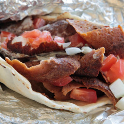

Maritime Donair

The Original Donair from the East Coast of Canada
In the early 70's, a Greek restaurateur in the city of Halifax
introduced the Donair. Within a few short years, virtually all
pizzerias had added their version of the dish to their menus.
Not to be confused with gyros, the Donair has a vastly different
flavor.
Originally the dish was made with ground lamb, but this proved too
costly and ground beef was later substituted. Technically, this
resulted in an aberration of sorts, as the final product was not
what the originator had intended. What resulted, however, is the
legendary East Coast Donair.
Ingredients
- 1 pound ground beef
- 1 teaspoon ground black pepper
- 1 teaspoon onion powder
- 1 teaspoon garlic powder
- 1 teaspoon salt
- 1 teaspoon paprika
- 2 teaspoons cayenne pepper
- 1 teaspoon dried oregano
- 1 (12 ounce) can evaporated milk
- ½ cup white sugar
- ¼ cup white vinegar, or to taste
- 6 large pita bread rounds
Step
- In a bowl, thoroughly mix together the ground beef, black
pepper, onion powder, garlic powder, salt, paprika, cayenne
pepper, and oregano. Pack the spiced meat into a thick loaf
shape, cover, and let rest in the refrigerator overnight.
- Preheat oven to 350 degrees F (175 degrees C).
- Place the meat loaf onto a baking sheet, and bake for 1
hour, flipping the loaf over halfway through cooking. Allow
the meat loaf to cool so it holds together for slicing.
- Mix together the evaporated milk and white sugar in a bowl, stirring until the sugar is dissolved, and then add the vinegar by teaspoons, mixing together after each addition, to taste. Refrigerate the sauce until serving.
- Slice the meat loaf into 1/4-inch thick slices, and brown the slices in a skillet over medium heat until both sides are brown and crisp, about 5 minutes per side.
- Sprinkle the pita bread rounds with a little water, and press each onto a heated skillet to warm up.
- To serve, place several slices of meat into a warmed pita bread, and spoon about 2 tablespoons of sauce over the meat. Roll the pita bread into a cone shape, wrap in aluminum foil to keep the sauce from dripping out, and serve.